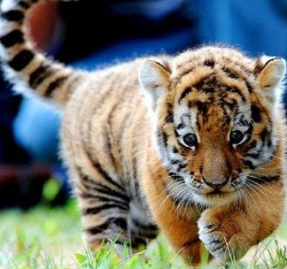
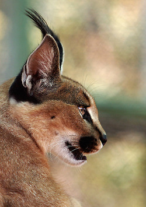
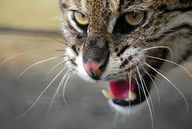

Классификация
Подсемейство Большие кошки
род дымчатые леопарды (Neofelis)
дымчатый леопард (Neofelis nebulosa);
калимантанский дымчатый леопард (Neofelis diardi);
род пантеры (Panthera)
лев (Panthera leo);
тигр (Panthera tigris);
леопард (Panthera pardus);
ягуар (Panthera onca);
род снежные барсы (Uncia)
снежный барс, ирбис (Uncia uncia)

Подсемейство Малые кошки
род гепарды (Acinonyx)
гепард (Acinonyx jubatus);
род каракалы (Caracal)
каракал (Caracal caracal);
род катопумы (Catopuma)
калимантанская кошка (Catopuma badia);
азиатская золотистая кошка (кошка Темминка) (Catopuma temmincki);
род кошки (Felis)
китайская кошка (гобийская серая кошка) (Felis bieti);
Камышовый кот (Хаус) (Felis chaus);
манул (Felis manul); барханная кошка (Felis margarita);
черноногая кошка (Felis nigripes);
лесная кошка (Felis silvestris), в том числе домашняя кошка;
степная кошка (Felis libyca);
род тигровые кошки (Leopardus)
пампасская кошка (Leopardus pajeros);
колоколо (Leopardus colocolo);
кошка Жоффруа (Leopardus geoffroyi);
чилийская кошка (кодкод) (Leopardus guigna);
андская кошка (Leopardus jacobitus);
оцелот (Leopardus pardalis);
онцилла (Leopardus tigrinus);
длиннохвостая кошка (марги, маргай) (Leopardus wiedii);
род сервалы (Leptailurus)
сервал (Leptailurus serval);
род рыси (Lynx)

канадская рысь (Lynx canadensis);
обыкновенная рысь (Lynx lynx);
пиренейская рысь (Lynx pardinus);
рыжая рысь (Lynx rufus);
Мраморная кошка (Pardofelis marmorata);
род азиатские кошки (Prionailurus)
бенгальская кошка (Prionailurus bengalensis);
ириомотская кошка (Prionailurus bengalensis iriomotensis);
дальневосточный лесной кот (Prionailurus bengalensis euptilurus);
суматранская кошка (Prionailurus planiceps);
пятнисто-рыжая кошка (Prionailurus rubiginosus);
кошка-рыболов (Prionailurus viverrinus);
золотая кошка (Profelis aurata);
род пумы (Puma)
пума (Puma concolor);
ягуарунди (Puma yaguaroundi);
|